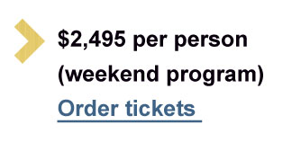

Program
This year’s event will include dozens of great wines in fun and educational conducted tastings. Each wine is presented by the owner and/or winemaker. All are included in your registration fee.
Your complete registration package includes:
• Friday and Saturday daytime sit-down tastings—top wines from the world’s best producers
• Thursday and Friday evening Critics’ Choice Grand Tastings—more than 250 wines rated 90 points or better
• Friday and Saturday seated lunches paired with wines

France’s Château Lafite Rothschild:
A vertical tasting of six vintages from one of Bordeaux’s most famous first-growth châteaus led by Baron Eric de Rothschild.
Italy’s Brunello di Montalcino:
A tasting of the 2010 vintage, rated 98 points by Wine Spectator, from four of Italy’s top producers to highlight different styles and sub-regions. Each wine is presented by the owner.
Champagne:
Explore the diversity of Champagne with a tasting from four of the region’s top producers pouring their têtes de cuvées.
Dessert Wines:
Taste four dessert/late harvest wines, unique, rare and historic, from France, Hungary, Portugal and South Africa. Owners will be on stage to talk about these sensational “sweeties.”
California’s Cabernet Sauvignon:
A tasting of top Cabernet Sauvignons from Pritchard Hill, one of Napa Valley’s prime sub-regions, each presented by its producer.
Wine Spectator’s 2015 Top 10 Wines:
Selected by Wine Spectator’s board of editors and published in the Dec. 31 Top 100 issue. An annual highlight.
Chefs’ Challenge:
Four dishes, eight wines. Featuring celebrity chefs José Andrés, Emeril Lagasse, Michael Lomonaco and restaurateur Piero Selvaggio. A fun event for all.
Wine Stars:
Throughout the weekend there will be individual presentations of great wines by renowned vintners from around the globe, each a star in the world of wine. Famous names include California’s Boots Brounstein from Diamond Creek Vineyards, Washington’s Christophe Baron from Cayuse Vineyard, France’s Philippe Guigal from E. Guigal and more.
Important Notice: The New York Wine Experience is sponsored by the Wine Spectator Scholarship Foundation, which underwrites grants and scholarships to students pursuing careers in the wine industry. Attendance is tax-deductible to the extent permitted by law.
Cancellation Policy: COMPLETE PACKAGE -- A full refund is available until July 1, 2016. After that date, until September 15, there is a $500 per person cancellation fee. After September 15 there are no refunds. GRAND TASTING AND BANQUET TICKETS -- A full refund is available until October 1, 2016. After that date there are no refunds for any tickets. Registrations, Banquet tickets and Grand Tasting tickets may be transferred to another person at any time.
Event sponsor reserves the right to refuse admission to any applicant. Must be 21 or older to attend.
home | program | grand tastings | hotel info
For questions email events@mshanken.com
Copyright © 2016 Wine Spectator. All rights reserved.